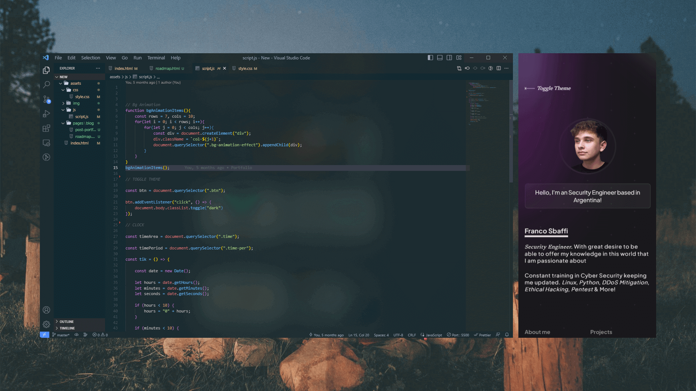

February 28, 2023
Getting Started in Cybersecurity
The world of cybersecurity can be very difficult, not only because finding the correct learning path is hard to see, but given its large number of branches, it makes it more difficult to find your ideal branch.
There are many types of branches including Software Development, Malware Analyst, Security Engineer, among MANY others.
Next I will leave you the basic points to be able to take a better path when it comes to being able to train you.
Learn the basics
Start by learning the fundamentals of cybersecurity, including basic networking, operating systems, and programming concepts.
Pick a path
Once you have learned the basics, you need to choose a path, specializing in what interests you the most. Like network security, web application security or cloud security to name a few.
Get Educated
Consider enrolling in cybersecurity courses or programs to gain knowledge and skills. There are many free and paid courses available online, as well as college and university programs.
Gain Experience
Gain hands-on cybersecurity experience through internships, apprenticeships, or entry-level positions. Look for opportunities to work with real world cybersecurity problems and solutions, experience is the most valuable thing you will have.
Get certified
Certifications can demonstrate your expertise in a specific area of cybersecurity and make you more competitive in the job market. Some popular certifications include CompTIA Security+, Certified Information Systems Security Professional (CISSP), and Certified Ethical Hacker (CEH). Security certifications assure companies that you are qualified for a certain position.
Network
Build relationships with other cybersecurity professionals, attend industry events and conferences, and join professional associations. Networking can help you learn about job opportunities and stay up-to-date on industry trends.
Read cybersecurity blogs and publications
There are many cybersecurity blogs and publications that provide in-depth insights into the field. By regularly reading these resources, you can stay informed about the latest threats, vulnerabilities and best practices.
Stay current with industry trends
Keep up-to-date with the latest cybersecurity news and trends by reading blogs, joining forums, and following social media accounts of industry experts.
Keep in mind that this is just a basic overview, and there is much more to learn about cybersecurity. It's important to continually educate yourself and stay up-to-date on the latest developments in the field.